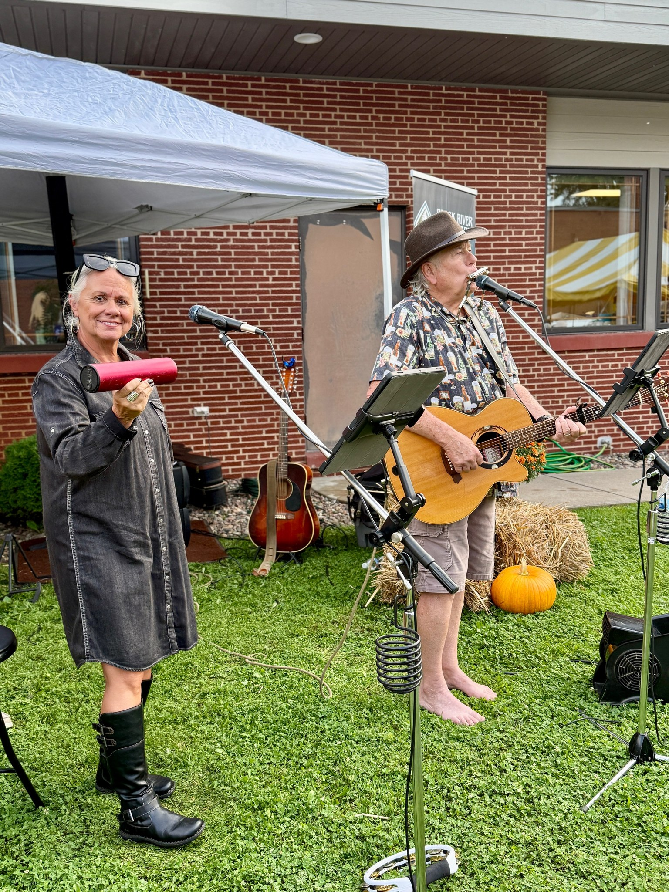

Relief
Immediate support that reduces harm and connects people to services.
Provention Health Foundation is a charitable organization recognized as a 501(c)(3) public charity (EIN 10290273). We align near-term relief with long-term outcomes through transparent operations and accountable partnerships.

Immediate support that reduces harm and connects people to services.
Training and employer links that lead to stable wages and benefits.
Activation of land to create safe interim sites and paths to permanence.